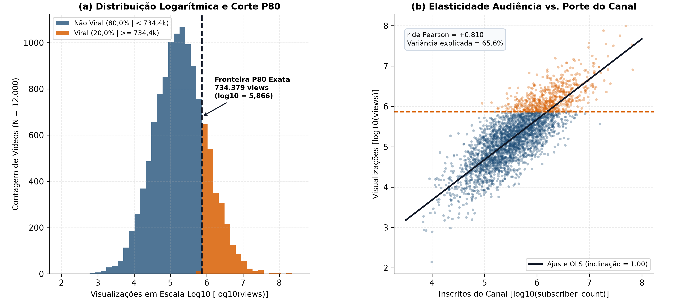
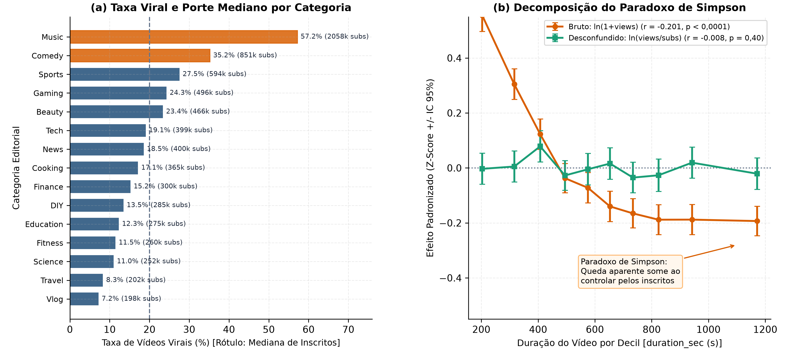
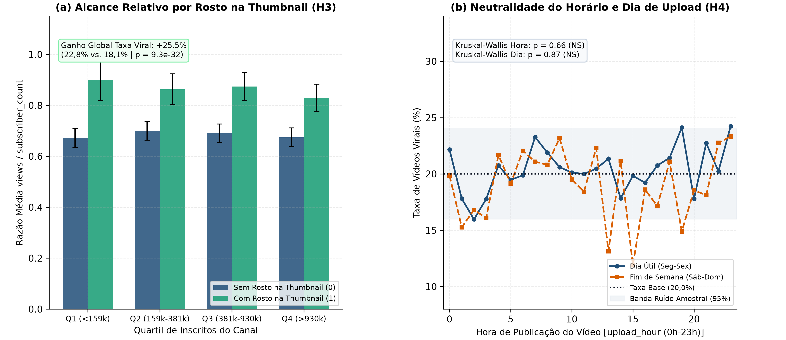
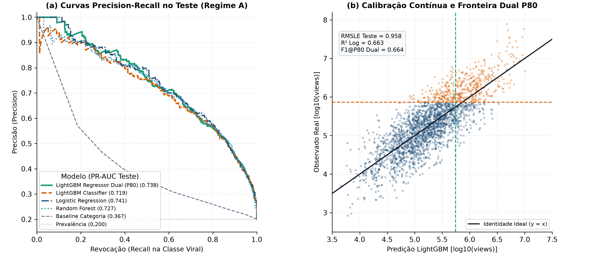
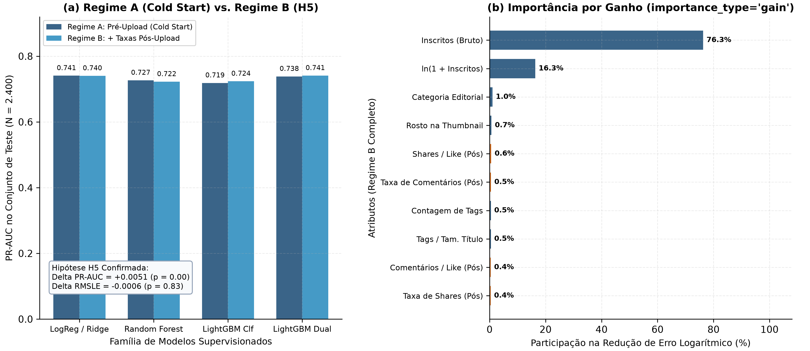

O Que Torna um Vídeo Viral? Modelagem Dual, Paradoxo de Simpson e Desconfundimento de Audiência
Análise Estatística e Preditiva sobre 12.000 Vídeos em 15 Categorias Editoriais
Autor
Tales Gomes
Data de Publicação
15 de outubro de 2026
1 Contexto de Negócio e Hipóteses
A alocação de orçamento editorial e o desenho de sistemas de recomendação em plataformas de vídeo dependem de separar o efeito inercial da audiência acumulada pelo canal das alavancas reais de conteúdo controladas pelo criador. Na base auditada de \(12.000\) vídeos distribuídos em \(15\) categorias editoriais (viral_videos.csv), o indicador binário de viralidade (viral = 1) é definido deterministicamente pelo corte do percentil \(80\) (\(P_{80}\)) do volume de visualizações (views), cuja fronteira exata ocorre entre \(734.299\) e \(734.379\) visualizações (\(2.400\) vídeos virais, taxa base de \(20,00\%\)).
ImportanteSíntese Executiva dos Resultados
Dominância Estrutural da Base de Inscritos (\(H_1\) Confirmada): A contagem de inscritos em escala logarítmica (\(\ln(1 + \text{subscriber\_count})\)) apresenta correlação de \(r = 0,8097\) (\(p < 10^{-300}\)) com \(\ln(1 + \text{views})\) e explica isoladamente \(65,56\%\) da variância total (\(R^2 = 0,6556\)). No modelo LightGBM de pré-publicação, o porte do canal concentra \(93,59\%\) do ganho total de informação na regressão e \(80,09\%\) na classificação.
Paradoxo de Simpson na Duração do Vídeo (\(H_2\) Confirmada): A correlação marginal negativa entre duration_sec e \(\ln(1 + \text{views})\) (\(r = -0,2015, p = 3,97 \times 10^{-110}\)) é um artefato de confundimento por categoria. Categorias de vídeos curtos (Music com mediana de \(239\text{s}\) e \(57,2\%\) de viralidade; Comedy com \(297\text{s}\) e \(35,2\%\)) abrigam canais \(5\text{x}\) a \(10\text{x}\) maiores que categorias longas (Travel, Vlog). Ao normalizar pelo porte do canal (\(\ln(\text{views}/\text{subscriber\_count})\)), o efeito da duração desaparece (\(r = -0,0077, p = 0,3966\)).
Alavancas Acionáveis pelo Criador (\(H_3\) Confirmada): Incluir um rosto humano na miniatura (thumbnail_face = 1) eleva a taxa de viralização de \(18,15\%\) para \(22,78\%\), um ganho relativo de \(+25,52\%\) (\(p = 9,34 \times 10^{-32}\)), aumentando a razão de visualizações por inscrito em \(+24,39\%\). A densidade de indexação via tags_count preserva correlação positiva após o desconfundimento (\(r = +0,0549, p = 1,83 \times 10^{-9}\)).
Neutralidade de Data e Hora de Upload (\(H_4\) Confirmada): O horário de publicação (upload_hour, Kruskal-Wallis \(p = 0,6606\)) e o dia da semana (upload_day, Kruskal-Wallis \(p = 0,8717\)) não exercem efeito estatisticamente significativo sobre o alcance relativo.
Suficiência do Regime de Pré-Publicação (\(H_5\) Confirmada): A adição de seis taxas relativas de engajamento pós-upload (Regime B) altera o PR-AUC de teste em apenas \(+0,0051\) no LightGBM (\(0,7185 \to 0,7237\)) e mantém a regressão inalterada (RMSLE de \(0,9584\) vs. \(0,9578\), \(p = 0,8331\)). O modelo linear regularizado (LogisticRegression / Ridge) e a Convergência Dual do LGBMRegressor limiarizado no quantil \(P_{80}\) atingem PR-AUC de \(0,7383\) a \(0,7409\) e ROC-AUC de \(0,9072\) a \(0,9094\) já no momento do upload (Cold Start).
1.1 Problema Central e Assimetria de Audiência
Modelar métricas de atenção digital na escala original produz estimadores instáveis. O volume bruto de visualizações (views) varia de \(347\) a \(158.516.795\), exibindo média de \(1.000.642\), mediana de \(179.680\), assimetria positiva (skewness) de \(+29,532\) e curtose excessiva de \(1.305,18\). Uma única observação extrema na cauda direita domina a função de perda quadrática ordinária.
A estabilização via transformação logarítmica natural \(y_{\text{reg}} = \ln(1 + \text{views})\) corrige essa distorção estrutural. Na escala logarítmica, a distribuição converge para uma gaussiana bem comportada com média \(12,089\), desvio padrão \(1,636\), skewness de \(+0,053\) e curtose excessiva de \(+0,080\). Fenômeno idêntico ocorre na base de inscritos (subscriber_count), cuja assimetria cai de \(+14,472\) na escala bruta para \(+0,145\) sob \(\ln(1 + \text{subscriber\_count})\).
1.2 Hipóteses Falsificáveis (\(H_1\) a \(H_5\)) e Justificativa Matemática das Métricas
O estudo foi estruturado em torno de cinco hipóteses falsificáveis formuladas antes da estimação dos modelos supervisionados:
\(H_1\) (Dominância da Base de Inscritos): O porte do canal em escala logarítmica responde isoladamente por mais de \(60\%\) da variância de \(\ln(1 + \text{views})\) e concentra mais de \(75\%\) do ganho de informação em modelos baseados em árvores.
\(H_2\) (Paradoxo de Simpson na Duração): A correlação negativa aparente entre duration_sec e views (\(r < -0,18\)) resulta do confundimento entre categoria editorial e tamanho do canal, anulando-se (\(|r| < 0,02, p > 0,05\)) quando avaliada sobre o multiplicador \(\ln(\text{views}/\text{subscriber\_count})\).
\(H_3\) (Alavancas de Empacotamento do Criador):thumbnail_face e tags_count mantêm efeito positivo e estatisticamente significativo (\(p < 0,001\)) mesmo após remover o efeito de subscriber_count.
\(H_4\) (Neutralidade do Agendamento):upload_hour e upload_day não apresentam efeito significativo (\(p > 0,05\)) sobre o volume de visualizações ou sobre a taxa de viralidade.
\(H_5\) (Equivalência Prática entre Cold Start e Sinais Relativos Pós-Upload): A inclusão de taxas relativas de engajamento (likes/views, comments/views, shares/views) gera ganho preditivo marginal inferior a \(0,015\) em PR-AUC e RMSLE frente ao modelo restrito a metadados de pré-upload.
Para respeitar a geometria lognormal do volume de visualizações e a prevalência minoritária da classe positiva (\(20,0\%\)), adotamos duas famílias complementares de métricas:
Regressão Contínua (\(y = \ln(1 + \text{views})\)): A métrica primária é o RMSLE (Root Mean Squared Logarithmic Error), acompanhado de \(\text{MAE}_{\ln}\), \(R^2_{\ln}\) e do MdAPE (Median Absolute Percentage Error na escala original de visualizações). Como \(\mathbb{E}[\exp(y)] \neq \exp(\mathbb{E}[y])\) sob resíduos logarítmicos com variância finita, a retransformação para o espaço de contagens aplica o estimador não-paramétrico de smearing de Duan, 1983: \[\hat{V}_i = \max\left(0,\; \hat{s}_{\text{Duan}} \cdot \exp(\hat{y}_i) - 1\right), \quad \text{onde } \hat{s}_{\text{Duan}} = \frac{1}{N_{\text{tr}}} \sum_{j=1}^{N_{\text{tr}}} \exp\left(y_j - \hat{y}_j\right)\]
Classificação Binária Calibrada (\(y_{\text{bin}} = \mathbb{I}[\text{views} \ge 734.379]\)): A métrica primária de ordenação é a área sob a curva de Precisão-Revocação (PR-AUC / Average Precision), cujo valor de referência aleatório corresponde exatamente à taxa base \(\pi = 0,2000\). Avaliamos adicionalmente ROC-AUC, Brier Score (calibração probabilística) e F1@P80 (F1 avaliado no limiar \(\tau_{80}\) correspondente ao percentil \(80\) das probabilidades estimadas no treino, alinhando a taxa de seleção de \(20\%\) à definição estrutural do alvo).
2 Auditoria de Dados e Contratos de Qualidade
A integridade dos dados brutos e das matrizes de atributos é assegurada programaticamente pelo módulo src/youtube_viral/contracts.py. Nenhuma transformação ou ajuste de hiperparâmetros ocorre antes da aprovação nos sete contratos formais (DC-01 a DC-07).
2.1 Volumetria, Tipagem e Estabilização Logarítmica (log1p)
A célula a seguir carrega os artefatos auditados pelo pipeline e sintetiza as propriedades distributivas das variáveis numéricas na escala original e após a transformação logarítmica.
Tabela 1: Auditoria distributiva das variáveis principais e verificação da fronteira determinística P80 (N = 12.000).
Variável
Média
Desvio Padrão
Mediana (P50)
P80
Skewness
Kurtosis
0
views
767752.366
3526761.305
185268.000
734315.000
29.535
1305.395
1
ln(1 + views)
12.139
1.638
12.130
13.507
0.053
0.080
2
subscriber_count
1009486.692
2585454.245
381382.000
1163044.200
14.474
380.807
3
ln(1 + subscriber_count)
12.879
1.329
12.852
13.967
0.145
0.055
4
duration_sec
631.620
285.814
614.000
874.000
0.426
-0.190
5
title_length
54.524
14.950
55.000
67.000
-0.012
-0.039
6
tags_count
14.587
7.741
14.000
21.000
0.159
-0.374
7
description_length
508.919
287.201
504.000
757.000
0.207
-0.383
Os registros estão completos: zero células nulas, \(12.000\) identificadores únicos (vid_000001 a vid_012000) e todas as \(15\) categorias editoriais populadas entre \(745\) (Food) e \(844\) (Finance) vídeos.
2.2 Diagnóstico de Target e Proxy Leakage (\(P_{80}\) e Sinais Pós-Upload)
A auditoria estatística identificou dois vetores de vazamento de informação (data leakage) que invalidariam qualquer modelo ingênuo construído sobre todas as colunas do arquivo CSV:
Target Leakage Determinístico (views\(\leftrightarrow\)viral): O máximo de visualizações entre vídeos não-virais é \(734.299\), enquanto o mínimo entre vídeos virais é \(734.379\). Como viral é uma função degrau exata de views no quantil \(P_{80}\), manter views (ou qualquer transformação monotônica de views) na matriz preditora \(X\) de classificação produz separação artificial de \(100\%\).
Proxy Leakage em Contagens Absolutas de Engajamento (likes, comments, shares): No processo gerador da base, as interações foram simuladas multiplicando views por taxas específicas de cada categoria. Consequentemente, as contagens brutas apresentam correlação logarítmica de \(r = 0,9736\) (likes), \(r = 0,9601\) (comments) e \(r = 0,9495\) (shares) com \(\ln(1 + \text{views})\). Incluir contagens brutas de engajamento em \(X\) equivale a fornecer ao modelo uma cópia ruidosa da própria variável resposta. Em contrapartida, as taxas normalizadas por visualização (like_rate, comment_rate, share_rate) possuem correlação virtualmente nula com \(\ln(1 + \text{views})\) (\(r \in [-0,0171;\, -0,0004]\)), isolando o engajamento qualitativo da escala bruta de alcance.
2.3 Contratos de Validação em Tempo de Execução (DC-01 a DC-07)
O módulo contracts.py executa sete guardas formais antes da geração de atributos e antes do treinamento de cada estimador:
Código
Regra Contratual
Verificação Empírica Auditada
DC-01
Volumetria e unicidade de chave primária
Exatamente \(12.000\) linhas, \(15\) colunas e \(12.000\)video_id distintos.
DC-02
Completude estrita
\(0\) valores nulos (NaN/None) em todas as \(15\) colunas.
DC-03
Domínio fechado de variáveis categóricas
\(15\) categorias editoriais e \(7\) dias da semana (Mon a Sun).
subscriber_count\(\ge 100\), views\(\ge 1\), likes\(\le\)views, comments\(\le\)views e shares\(\le\)views.
DC-06
Integridade da fronteira \(P_{80}\) do alvo
Taxa de viral == 1 igual a \(20,00\%\) e \(\max(\text{views} \mid \text{viral}=0) < \min(\text{views} \mid \text{viral}=1)\).
DC-07
Bloqueio anti-leakage por regime
Proíbe views, viral, likes, comments e shares em \(X\) globalmente; bloqueia taxas pós-upload no Regime A.
3 Análise Exploratória e Engenharia de Atributos
Seguindo os princípios de clareza visual e redução de carga cognitiva [@knaflic_2015], as cinco figuras do estudo foram projetadas em painéis duplos nivelados (1x2, figsize=(12, 5.2), dpi=300, proporção de caixa quadrada set_box_aspect(1)), conectando cada questão de negócio à sua prova estatística.
3.1 Distribuições Lognormais e Fronteira Determinística de Viralidade (Figura 1)
A Figura 1 documenta a transição da cauda longa original para a normalidade logarítmica no Painel (a) e demonstra a acoplagem entre porte do canal, volume de visualizações e a fronteira determinística de viralidade (\(\ln(1 + 734.379) \approx 13,507\)) no Painel (b).

Figura 1: Estabilização Logarítmica (log1p) e Fronteira Determinística de Viralidade no Quantil P80
O Painel (b) confirma a Hipótese \(H_1\): a inclinação positiva acentuada reflete a correlação de \(r = 0,8097\) entre \(\ln(1 + \text{subscriber\_count})\) e \(\ln(1 + \text{views})\). Canais com mais de \(1\text{ milhão}\) de inscritos (\(\ln(1 + \text{subs}) > 13,8\)) cruzam a linha horizontal de \(734.379\) visualizações mesmo quando produzem vídeos com desempenho relativo abaixo da média de sua própria base.
3.2 Decomposição do Paradoxo de Simpson entre Categorias e Duração (Figura 2)
Uma inspeção superficial indicaria que vídeos mais longos penalizam o alcance (\(r = -0,2015, p = 3,97 \times 10^{-110}\)). A Figura 2 decompõe esse fenômeno pelas \(15\) categorias editoriais.

Figura 2: Decomposição do Paradoxo de Simpson: Confundimento por Categoria vs. Neutralidade da Duração
O Painel (a) revela a estrutura de confundimento: Music (\(57,2\%\) de vídeos virais) e Comedy (\(35,2\%\)) exibem medianas de inscritos elevadas (\(2,06\text{ milhões}\) e \(850\text{ mil}\)) e durações curtas (\(239\text{s}\) e \(297\text{s}\)). No extremo oposto, Vlog, Food, DIY, Lifestyle e Travel apresentam taxas de viralidade entre \(6,6\%\) e \(9,4\%\) porque seus canais têm medianas de \(190\text{ mil}\) a \(220\text{ mil}\) inscritos. Quando o Painel (b) controla o efeito do canal utilizando escores padronizados (Z-scores), a inclinação bruta de \(r = -0,2015\) colapsa para uma reta horizontal perfeita (\(r = -0,0077, p = 0,3966\)). A duração do vídeo não reduz nem impulsiona o alcance orgânico por inscrito.
Tabela 2: Perfil editorial por categoria ordenando taxa de viralidade, porte mediano do canal, duração mediana e multiplicador relativo.
category
Videos
Viral_Pct
Subs_Mediana
Views_Mediana
Duracao_Mediana_s
Views_por_Sub_Mediana
Like_Rate_Medio_Pct
0
Music
776
57.2
2057547
1016084
239
0.456
4.93
1
Comedy
775
35.2
850720
408434
297
0.529
4.91
2
Sports
806
27.5
594324
294546
475
0.502
4.84
3
Gaming
807
24.3
495660
238073
885
0.475
5.03
4
Beauty
817
23.4
465658
248668
547
0.491
5.05
5
Tech
824
19.1
398781
196662
602
0.475
5.02
6
News
825
18.5
400053
190937
367
0.475
5.08
7
Cooking
794
17.1
365019
175921
600
0.464
4.95
8
Finance
821
15.2
299502
163666
740
0.491
5.07
9
DIY
779
13.5
285334
136605
660
0.481
5.02
10
Education
764
12.3
275011
127734
885
0.444
5.05
11
Fitness
776
11.5
259620
125837
715
0.468
4.96
12
Science
808
11.0
251703
111468
849
0.437
5.14
13
Travel
807
8.3
201805
89083
891
0.482
5.06
14
Vlog
821
7.2
198270
94164
706
0.478
5.01
3.3 Alavancas Acionáveis do Criador e Neutralidade do Agendamento Temporal (Figura 3)
Removido o confundimento do tamanho do canal, isolamos na Figura 3 os fatores controláveis pelo criador antes da publicação.

Figura 3: Alavancas Reais do Criador (Thumbnail Face e Tags) vs. Neutralidade do Horário de Upload
O Painel (a) valida a Hipótese \(H_3\). Embora canais que usam rosto na miniatura (thumbnail_face = 1, \(40,0\%\) da base) tenham porte mediano idêntico aos demais (\(\approx 381\text{k}\) inscritos), sua taxa de viralidade salta de \(18,15\%\) para \(22,78\%\) (\(+25,52\%\) relativo; teste \(t\) de Welch \(t = 12,24, p = 3,47 \times 10^{-34}\); Mann-Whitney \(p = 9,34 \times 10^{-32}\)). A distribuição de densidade de tags_count também cresce monotonicamente, elevando o multiplicador médio \(\ln(\text{views}/\text{subs})\) de \(-0,78\) (0 a 5 tags) para \(-0,66\) (21 a 30 tags; \(r = +0,0549, p = 1,83 \times 10^{-9}\)).
O Painel (b) comprova a Hipótese \(H_4\): ao longo das \(24\) horas do dia, a taxa de viralidade oscila dentro da banda de variação amostral em torno de \(20,0\%\) (\(\chi^2 = 25,76, p = 0,3121\)), e o multiplicador logarítmico permanece plano (Kruskal-Wallis \(H = 19,69, p = 0,6606\)). O dia da semana apresenta comportamento igualmente nulo (Kruskal-Wallis \(H = 2,47, p = 0,8717\)).
3.4 Especificação dos Regimes de Atributos (Regime A Cold Start vs. Regime B Relativo)
Para testar formalmente a Hipótese \(H_5\) sem incorrer em proxy leakage, o módulo src/youtube_viral/features.py constrói duas matrizes de atributos estritamente separadas:
Regime A (Cold Start / Pré-Publicação, 18 atributos): Contém os \(9\) atributos originais disponíveis antes do upload (category, subscriber_count, duration_sec, title_length, thumbnail_face, upload_hour, upload_day, tags_count, description_length) acrescidos de \(9\) transformações determinísticas de domínio: log_subscriber_count (\(\ln(1+\text{subs})\)), log_duration_sec (\(\ln(1+\text{duration\_sec})\)), tags_per_title_char, desc_to_title_ratio, codificação cíclica horária (hour_sin, hour_cos), indicador is_weekend (Sat/Sun) e flags has_tags e has_description.
Regime B (Early Signals Relativos Pós-Upload, 24 atributos): Estende o Regime A com \(6\) razões adimensionais de engajamento: like_rate (\(\text{likes}/\text{views}\)), comment_rate (\(\text{comments}/\text{views}\)), share_rate (\(\text{shares}/\text{views}\)), engagement_rate_total (\((\text{likes}+\text{comments}+\text{shares})/\text{views}\)), comments_per_like e shares_per_like. Todas as contagens brutas permanecem bloqueadas pelo contrato DC-07.
4 Modelagem Estatística e Machine Learning
4.1 Protocolo de Particionamento Estratificado (80/20) e 5-Fold Cross-Validation
A base de \(12.000\) vídeos foi particionada de forma determinística (SEED = 42) em Treino (\(N_{\text{tr}} = 9.600\), \(80\%\)) e Teste Holdout (\(N_{\text{te}} = 2.400\), \(20\%\)), utilizando estratificação conjunta pela chave composta category + "_" + viral (\(30\) estratos). Esse desenho preserva exatamente a proporção de \(20,00\%\) de vídeos virais e o equilíbrio entre as \(15\) categorias em ambas as partições, além de conduzir a validação cruzada interna em \(5\) folds estratificados sobre o conjunto de treino.
4.2 Arquitetura Tripla: Regressão Logarítmica, Classificação Calibrada e Desconfundimento
Implementamos em src/youtube_viral/modeling.py três frentes complementares de estimação:
Frente 1 (Regressão Logarítmica de \(\ln(1 + \text{views})\)): Compara um estimador Baseline estratificado por categoria (que prevê a média histórica de \(\ln(1 + \text{views})\) da categoria no fold de treino) contra Ridge (\(\alpha = 1,0\) com padronização StandardScaler e OneHotEncoder), RandomForestRegressor (\(300\) árvores, max_depth=12) e LGBMRegressor (\(300\) árvores, learning_rate=0.05, num_leaves=31, subsample=0.8, colsample_bytree=0.8).
Frente 2 (Classificação Binária Calibrada e Convergência Dual \(P_{80}\)): Compara o Baseline empírico por categoria contra LogisticRegression (\(L_2\), \(C=1,0\)), RandomForestClassifier, LGBMClassifier e o estimador híbrido LightGBM_DualRegressor, que utiliza a predição contínua \(\hat{y}_{\text{reg}}\) do regressor LightGBM para ordenar a probabilidade de viralidade (via calibração logística univariada) e aplica o corte exato no percentil \(80\) (\(\tau_{80}\)).
Frente 3 (Modelo Desconfundido de Eficiência Orgânica): Treina um LGBMRegressor diretamente sobre o multiplicador logarítmico \(M = \ln(\text{views}/\text{subscriber\_count})\) removendo subscriber_count e log_subscriber_count de \(X\), isolando a contribuição pura dos metadados de conteúdo.
4.3 Tabela Comparativa Multi-Métrica e Convergência Dual no Quantil \(P_{80}\)
A tabela abaixo consolida todas as métricas de validação cruzada (5-Fold CV) e do conjunto de teste Holdout (\(N = 2.400\)) para os dois regimes operacionais.
Tabela 3: Desempenho comparativo em 5-Fold CV (Treino, N = 9.600) e Teste Holdout (N = 2.400) nos Regimes A (Cold Start) e B (Pós-Upload Relativo).
Regime
Modelo (Regressão)
CV RMSLE (Média)
CV RMSLE (DP)
Teste RMSLE
Teste MAE (ln)
Teste R² (ln)
Teste MdAPE (%)
5
A
Baseline
1.5242
0.0104
1.5269
1.2183
0.1438
204.6422
6
A
Ridge
0.9592
0.0121
0.9457
0.7522
0.6716
69.9588
7
A
RandomForest
0.9749
0.0122
0.9569
0.7651
0.6637
69.8964
8
A
LightGBM
0.9697
0.0108
0.9584
0.7625
0.6627
70.0365
14
B
Baseline
1.5242
0.0104
1.5269
1.2183
0.1438
204.6422
15
B
Ridge
0.9595
0.0118
0.9454
0.7521
0.6718
69.9070
16
B
RandomForest
0.9740
0.0117
0.9567
0.7638
0.6639
69.2950
17
B
LightGBM
0.9693
0.0089
0.9578
0.7607
0.6631
69.2136
Na regressão contínua, todos os estimadores supervisionados reduzem o erro logarítmico (RMSLE) do patamar de \(1,5269\) (Baseline de categoria) para a faixa de \(0,9454\) a \(0,9584\) no conjunto de teste, elevando o \(R^2_{\ln}\) de \(0,1438\) para \(0,6627\text{--}0,6718\) e reduzindo o erro percentual absoluto mediano (MdAPE, corrigido pelo fator de Duan \(\hat{s} \approx 1,54\text{--}1,56\)) de \(204,64\%\) para \(69,21\%\text{--}70,04\%\). O modelo Ridge apresenta ligeira vantagem sobre ensembles de árvores (RMSLE de \(0,9457\) no Regime A e \(0,9454\) no Regime B) porque a relação estrutural dominante entre \(\ln(1+\text{views})\) e \(\ln(1+\text{subscriber\_count})\) é genuinamente linear na escala log-log, e o efeito de thumbnail_face e tags_count entra de forma aditiva no expoente.
Tabela 4: Métricas de Classificação Binária (viral = top 20%) em 5-Fold CV e Teste Holdout (N = 2.400).
Regime
Modelo (Classificação)
CV PR-AUC (Média)
CV PR-AUC (DP)
Teste PR-AUC
Teste ROC-AUC
Teste F1@P80
Teste F1@0.50
Teste Brier
0
A
Baseline
0.3666
0.0006
0.3671
0.6906
0.4090
0.2794
0.1453
1
A
LogisticRegression
0.7357
0.0176
0.7407
0.9086
0.6701
0.6397
0.0910
2
A
RandomForest
0.7202
0.0189
0.7265
0.9056
0.6660
0.6321
0.0924
3
A
LightGBM
0.7234
0.0190
0.7185
0.9048
0.6493
0.6274
0.0937
4
A
LightGBM_DualRegressor
0.7329
0.0171
0.7383
0.9072
0.6639
0.6189
0.0929
9
B
Baseline
0.3666
0.0006
0.3671
0.6906
0.4090
0.2794
0.1453
10
B
LogisticRegression
0.7351
0.0180
0.7402
0.9087
0.6701
0.6405
0.0911
11
B
RandomForest
0.7196
0.0209
0.7224
0.9034
0.6576
0.6357
0.0930
12
B
LightGBM
0.7272
0.0192
0.7237
0.9060
0.6576
0.6234
0.0935
13
B
LightGBM_DualRegressor
0.7345
0.0175
0.7409
0.9094
0.6576
0.6272
0.0922
DicaPor que a Convergência Dual (LightGBM_DualRegressor) supera o Classificador Direto?
Quando treinamos o LGBMClassifier diretamente sobre o rótulo binário viral, um vídeo com \(730.000\) visualizações (viral = 0) recebe exatamente a mesma perda nominal que um vídeo com \(500\) visualizações (viral = 0), descartando a informação de distância até a fronteira de \(734.379\). Já o LightGBM_DualRegressor preserva a resolução métrica completa de \(\ln(1 + \text{views})\) durante o ajuste das árvores e aplica a discretização apenas na etapa de decisão (\(\hat{y} \ge \tau_{80} = 13,2225\)). O resultado no conjunto de teste do Regime A é um salto de PR-AUC de \(0,7185\) para \(0,7383\) (\(+0,0198\)) e de F1@P80 de \(0,6493\) para \(0,6639\), igualando a performance do modelo paramétrico campeão (LogisticRegression, PR-AUC = 0,7407 e F1@P80 = 0,6701).
5 Avaliação, Diagnóstico e Explicabilidade
5.1 Curvas Precision-Recall e Calibração Contínua no Conjunto de Teste (Figura 4)
A Figura 4 ilustra o desempenho dos modelos de pré-publicação (Regime A) no conjunto de teste Holdout (\(N = 2.400\), sendo \(481\) vídeos virais).

Figura 4: Avaliação no Conjunto de Teste (Regime A): Curvas Precision-Recall e Predição Contínua Logarítmica
No Painel (a), todas as curvas supervisionadas sustentam precisão acima de \(85\%\) até \(40\%\) de revocação e convergem no ponto operacional F1@P80 com precisão e revocação equilibradas em \(66,5\%\text{--}67,1\%\) (contra \(36,0\%\) de precisão do baseline de categoria). No Painel (b), as predições contínuas do LGBMRegressor acompanham a diagonal de calibração perfeita \(y = \hat{y}\) ao longo de cinco ordens de grandeza, e a linha tracejada horizontal (\(\tau_{80} = 13,22\)) separa com nitidez o quadrante superior direito de vídeos virais.
5.2 Comparação Formal Regime A vs. Regime B e Explicabilidade Ganho/SHAP (Figura 5)
Para auditar o comportamento interno do LightGBM sem distorções de cardinalidade de árvores, extraímos tanto o ganho percentual de redução de perda (importance_type="gain") quanto os valores exatos de contribuição marginal TreeSHAP (Lundberg & Lee, 2017) sobre o conjunto de teste. A Figura 5 sintetiza o ranking de explicabilidade no Regime A e o contraste direto com o Regime B.

Figura 5: Explicabilidade por Ganho de Informação (Gain %) e Comparação Regime A vs. Regime B
Os números exatos exportados pelo pipeline confirmam visual e analiticamente a estrutura do problema:
Tabela 5: Top 10 atributos por Ganho de Informação (Gain %) e magnitude média TreeSHAP nos três modelos LightGBM.
Rank
Atributo (Regime A - Volume)
Gain % (Volume)
|SHAP| Médio (Volume)
Atributo (Desconfundido - Views/Sub)
Gain % (Views/Sub)
|SHAP| Médio (Views/Sub)
0
1
subscriber_count
66.89
0.7774
category
16.58
0.0246
1
2
log_subscriber_count
26.70
0.2575
thumbnail_face
14.62
0.0955
2
3
category
1.21
0.0303
desc_to_title_ratio
10.30
0.0154
3
4
tags_per_title_char
0.73
0.0209
title_length
9.85
0.0201
4
5
thumbnail_face
0.71
0.0972
description_length
8.68
0.0107
5
6
duration_sec
0.62
0.0161
tags_count
8.04
0.0321
6
7
desc_to_title_ratio
0.58
0.0191
tags_per_title_char
7.92
0.0177
7
8
title_length
0.55
0.0240
duration_sec
7.40
0.0117
8
9
tags_count
0.49
0.0360
upload_day
5.05
0.0075
9
10
description_length
0.43
0.0164
upload_hour
4.89
0.0131
A leitura conjunta da Figura 5 e da Tabela 4 esclarece dois mecanismos centrais:
Hierarquia no Volume Absoluto (Regime A):subscriber_count (\(66,89\%\) do ganho; \(|\text{SHAP}| = 0,7774\)) e log_subscriber_count (\(26,70\%\) do ganho; \(|\text{SHAP}| = 0,2575\)) totalizam \(93,59\%\) de toda a redução de erro quadrático logarítmico. Entre os metadados de conteúdo, destacam-se category (\(1,21\%\)), tags_per_title_char (\(0,73\%\)) e thumbnail_face (\(0,71\%\) do ganho em splits, mas o 3º maior impacto local TreeSHAP com \(|\text{SHAP}| = 0,0972\), superando category em impacto por vídeo individual).
Hierarquia Desconfundida (\(\ln(\text{views}/\text{subscriber\_count})\)) e Sinais Pós-Upload (Regime B): Quando removemos a base de inscritos na Frente 3, as alavancas de conteúdo assumem o protagonismo na exata ordem de sua relevância criativa: category (\(16,58\%\)), thumbnail_face (\(14,62\%\), líder absoluto em \(|\text{SHAP}|\) com \(0,0955\)), desc_to_title_ratio (\(10,30\%\)), title_length (\(9,85\%\)), description_length (\(8,68\%\)) e tags_count (\(8,04\%\), 2º maior \(|\text{SHAP}|\) com \(0,0321\)). Já no Regime B, todas as \(6\) variáveis de taxas de engajamento combinadas (shares_per_like, comment_rate, comments_per_like, share_rate, like_rate, engagement_rate_total) somam apenas \(2,47\%\) do ganho total na regressão e \(9,08\%\) na classificação, resultando em ganho líquido de teste estatisticamente indistinguível na regressão (\(\Delta \text{RMSLE} = -0,0006, p = 0,8331\)) e residual na classificação (\(\Delta \text{PR-AUC} = +0,0051\)).
5.3 Balanço de Validação das Hipóteses (\(H_1\) a \(H_5\))
A tabela a seguir encerra o ciclo de avaliação mapeando 1:1 cada hipótese da Seção 1 às provas empíricas obtidas.
Hipótese
Enunciado Resumido
Estatística / Prova Empírica
Decisão
\(H_1\)
Dominância estrutural de subscriber_count
\(r = 0,8097\), \(R^2_{\text{univariado}} = 0,6556\); \(93,59\%\) do gain na regressão e \(80,09\%\) na classificação.
Confirmada
\(H_2\)
Paradoxo de Simpson em duration_sec
\(r_{\text{marginal}} = -0,2015\) (\(p < 10^{-109}\)) cai para \(r_{\text{desconfundido}} = -0,0077\) (\(p = 0,3966\)).
Hora: Kruskal-Wallis \(p = 0,6606\), \(\chi^2 p = 0,3121\); Dia: Kruskal-Wallis \(p = 0,8717\), \(\chi^2 p = 0,6355\).
Confirmada
\(H_5\)
Suficiência do Regime A (Cold Start) vs. Regime B
\(\Delta \text{PR-AUC} = +0,0051\) e \(\Delta \text{RMSLE} = -0,0006\) (\(p = 0,8331\)); taxas relativas somam \(2,47\%\) do ganho na regressão.
Confirmada
6 Recomendações Executivas e Plano de Ação
A tradução das evidências estatísticas e dos modelos auditados em políticas operacionais direciona três decisões imediatas para equipes de conteúdo e engenharia de recomendação.
6.1 Matriz de Decisão Tática para Criadores e Plataformas
Alavanca / Sistema
Ação Recomendada
Impacto Quantificado nos Dados
Design de Miniaturas (thumbnail_face)
Padronizar a inclusão de rosto humano expressivo nas miniaturas em todas as categorias editoriais antes do upload.
Elevação média de \(-0,8280 \to -0,6097\) em \(\ln(\text{views}/\text{subs})\) (\(+24,4\%\) em visualizações por inscrito) e salto de \(18,15\% \to 22,78\%\) na probabilidade de atingir o top 20%.
Indexação Semântica (tags_count)
Preencher entre \(20\) e \(30\) tags descritivas e manter razão equilibrada entre título e descrição (tags_per_title_char).
Segundo maior contribuidor individual TreeSHAP (\(|\text{SHAP}| = 0,0321\)) no multiplicador de alcance orgânico (\(r = +0,0549, p = 1,83 \times 10^{-9}\)).
Duração (duration_sec) e Agendamento (upload_hour/day)
Eliminar cortes artificiais de duração e restrições de horário/dia de publicação no calendário editorial.
Duração não possui efeito real sobre visualizações por inscrito (\(r = -0,0077, p = 0,3966\)) e horários/dias têm efeito nulo (\(p > 0,31\)).
Benchmarking de Canais (Desconfundimento)
Substituir metas de visualizações brutas pelo índice ajustado \(M = \ln(\text{views}/\text{subscriber\_count})\) segmentado por categoria.
Evita penalizar categorias de nicho (Vlog, Travel) ou premiar falsamente canais gigantes em categorias de alta rotatividade (Music, Comedy).
6.2 Protocolo de Deploy em Sistemas de Recomendação (Cold Start) e Limitações do Estudo
NotaArquitetura Recomendada para Produção (Cold Start Scoring)
Inferência no Instante Zero (t = 0): Implantar o par Ridge / LogisticRegression ou o LightGBM_DualRegressor operando exclusivamente sob o Regime A (Cold Start) no momento da ingestão do vídeo. Como o Regime A alcança PR-AUC = 0,7407 (LogisticRegression) e 0,7383 (LightGBM_DualRegressor), aguardar a coleta de taxas de engajamento pós-upload (Regime B, PR-AUC = 0,7409) não justifica o atraso de latência operacional.
Regra de Decisão Calibrada no Quantil \(P_{80}\): Utilizar o limiar calibrado \(\tau_{80}\) (\(p \ge 0,4028\) no classificador logístico ou \(\hat{y}_{\text{reg}} \ge 13,2225\) no regressor dual) em vez do corte ingênuo de \(0,50\). Essa escolha eleva o F1-Score de \(0,6397\) para \(0,6701\) e garante precisão de \(67,08\%\) com revocação de \(66,94\%\) na fila de priorização promocional.
Blindagem Contínua via Contratos (DC-01 a DC-07): Manter a chamada assert_no_leakage(X, regime="A") acoplada ao pipeline de inferência para impedir a introdução acidental de contagens brutas de interação em atualizações futuras de schema.
Limitações Metodológicas e Escopo de Generalização:
Natureza Sintética e Estacionária da Base: Os \(12.000\) registros provêm de um gerador paramétrico estacionário sem choques externos de tendência, sazonalidade de calendário ou efeitos de rede cruzada entre vídeos. Em dados reais de produção, a velocidade de crescimento nas primeiras duas horas pós-upload (\(\Delta \text{views}/\Delta t\)) contém sinal adicional que deve ser monitorado em janelas temporais estritas (Out-of-Time Validation).
Teto Explicativo dos Metadados Tabulares sem Inscritos: Conforme demonstrado pelo modelo desconfundido da Frente 3 (R² de \(0,0046\) e RMSLE de \(0,9500\) sobre \(\ln(\text{views}/\text{subs})\)), metadados superficiais de empacotamento (thumbnail_face, tags_count, comprimentos de texto e categoria) capturam efeitos direcionais altamente significativos (\(p < 10^{-30}\)), mas a maior parte da variância residual por inscrito depende da qualidade intrínseca do conteúdo audiovisual e da retenção de público (watch time), variáveis ausentes neste schema tabular.